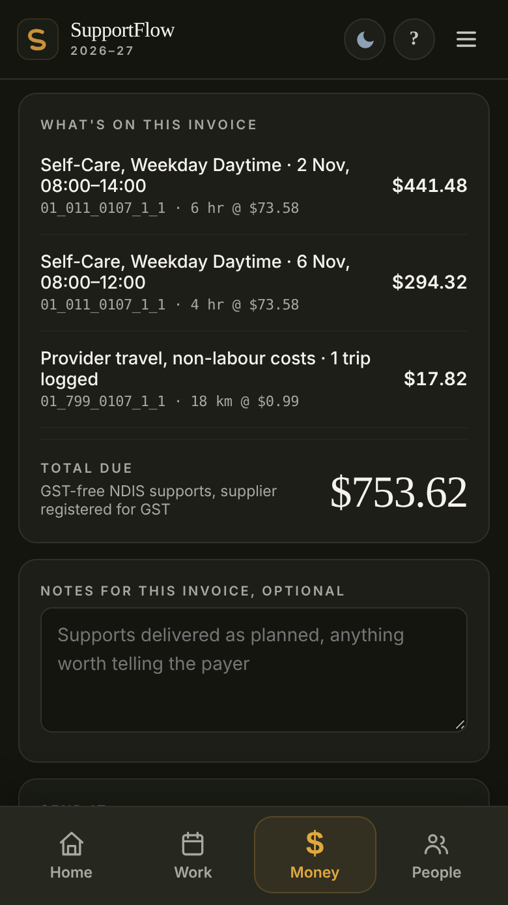
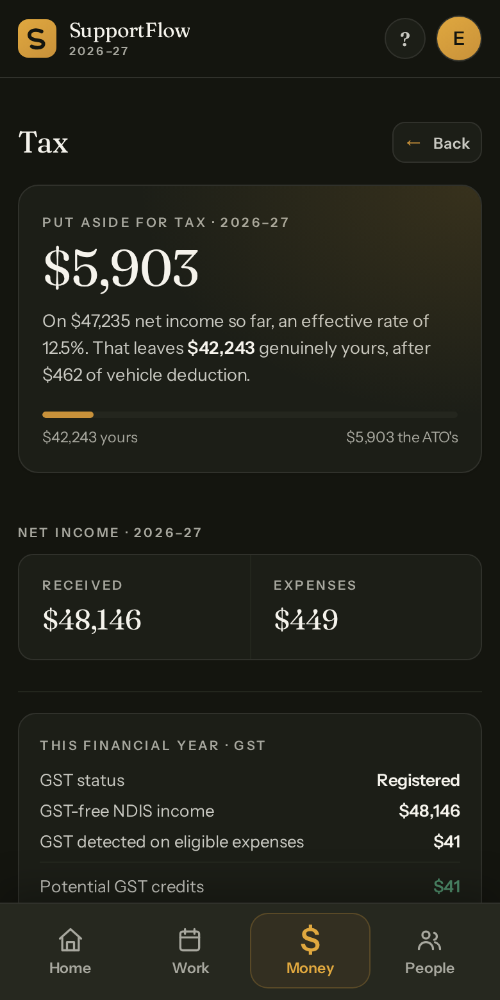

For independent support workers
From shiftto invoice
Shifts • Kilometres • Notes • Invoices • Tax • Overdue payment tracker • Expenses
Includes five invoices for 30 days, no payment required
Includes five invoices for 30 days, no payment required
The tracker follows up on its own, with no action needed from you.
Polite reminder email
Firmer follow-up email
Complaint draft ready
Start with 5 free invoices for 30 days. Upgrade when you're ready. No subscription.
Basic plus both add-ons totals A$137. Premium is A$149 and packages the second device and payment tracker in one purchase.
Prices in Australian dollars, GST inclusive where applicable. Your rights under the Australian Consumer Law are not affected.
Built around how you actually work — log once and let the app connect the rest.
Log the shift in Work, raise the invoice, and Money keeps a running tax figure the moment you mark it paid.
NDIS item codes built in, participant and plan manager details filled in, due dates worked out automatically. Pick who it's for and most of it is already done.

A running figure for an estimate of what you may need to put aside for tax, using current rates, after your expenses and vehicle deduction. This is the number that stops June being a shock.

One trip. One record. Every use it's entitled to.
The same goes for shifts. Log one and the app helps match it to the applicable support item, weekday, evening, Saturday or public holiday, then puts it on the invoice and counts it toward your tax. You enter it once.
Manage shifts, notes, travel and invoices on your phone or computer.
The questions people actually have, answered plainly.
Install SupportFlow: add it to your home screen and it works offline.
You hold people's names, NDIS numbers and notes about their disability. That's health information, and the law treats it seriously. So does this app.
Full detail on how backups, locking and sharing work is in the Privacy Policy.